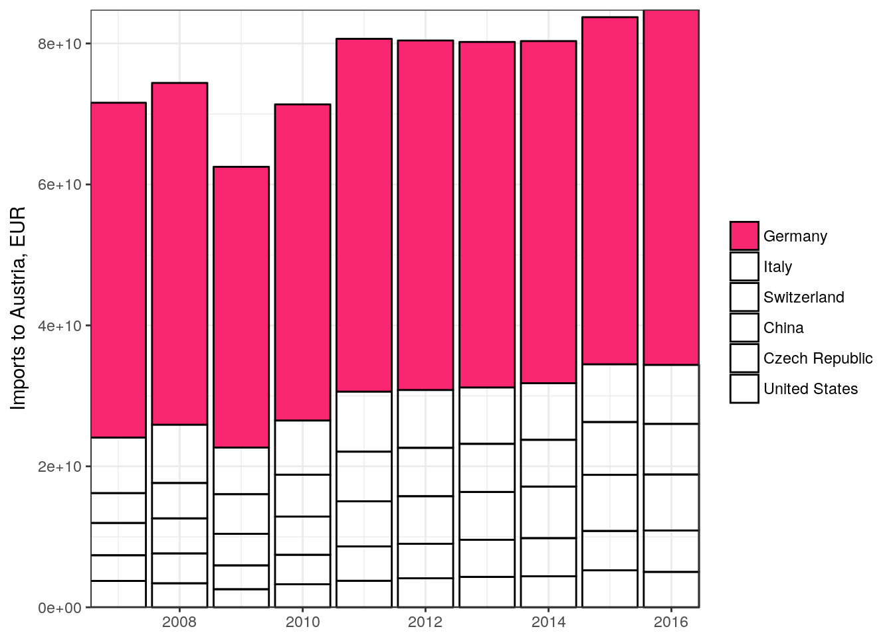

## dataset <- "OGD_vgr001_VGRJahresR_1"
dataset <- "OGD_f1531neu_Aussenhandel_1"
statat_data <- statatAPI(dataset = dataset)
knitr::kable(statat_data[1:n_table, ])| date | C_UBL1531_0 | variable | value |
|---|---|---|---|
| 2007-01-01 | 1 | F_AHG_EINWERT | 3674128747 |
| 2007-01-01 | 3 | F_AHG_EINWERT | 3401536237 |
| 2007-01-01 | 4 | F_AHG_EINWERT | 47498026629 |
| 2007-01-01 | 5 | F_AHG_EINWERT | 7887893549 |
| 2007-01-01 | 6 | F_AHG_EINWERT | 2330537291 |
df <- statatTables()
knitr::kable(df[1:n_table, ])| ID | Title |
|---|---|
| OGD_konjidxhan10_Konjunktur_Handel_1 | Konjunkturindizes Handel Basis 2010 |
| OGD_f1531neu_Aussenhandel_1 | Außenhandelsdaten Jährlich |
| OGD_ahlgrhs_Aussenhandel_3 | Außenhandelsdaten Jährlich nach Ländergruppen |
| OGD_ahlgrhs_Aussenhandel_2 | Außenhandelsdaten Jährlich nach SITC |
| OGD_touextsai_Tour_HKL_1 | Nächtigungsstatistik ab November 1973 - Nächtigungen nach Herkunftsländern und Bundesländern |
statat_dim <-
statatDimension(dataset = dataset,
dimension = "C_UBL1531_0") %>%
select(code, en_name)
knitr::kable(statat_dim[1:n_table, ])| code | en_name |
|---|---|
| 1 | France |
| 3 | Netherlands |
| 4 | Germany |
| 5 | Italy |
| 6 | United Kingdom |
library(ggplot2)
data_filter <-
statat_data %>%
left_join(statat_dim, by = c("C_UBL1531_0" = "code")) %>%
filter(variable == "F_AHG_EINWERT")
data_top <-
data_filter %>%
group_by(en_name) %>%
summarize(SUM = sum(value)) %>%
arrange(-SUM) %>%
head(6)
data_plot <- data_filter
data_plot$en_name <- factor(data_plot$en_name, levels = as.character(data_top$en_name))
p <-
data_plot %>%
filter(en_name %in% data_top$en_name) %>%
ggplot(aes(x = date, y = value, fill = en_name)) +
geom_bar(stat = "identity", color = "black") +
scale_x_date(name = NULL, expand = c(0,0)) +
scale_y_continuous(name = "Imports to Austria, EUR", expand = c(0,0)) +
scale_fill_manual(values = c("#F92672", rep("transparent", 5))) +
guides(fill = guide_legend(title = NULL)) +
theme_bw()
p